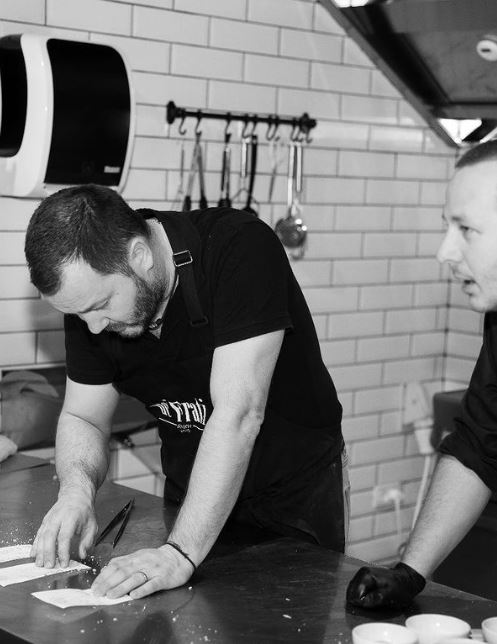
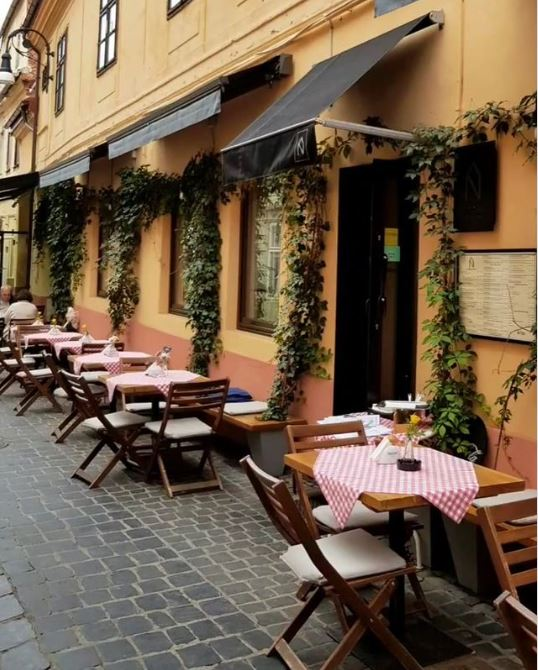
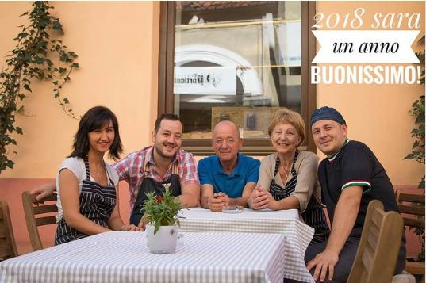
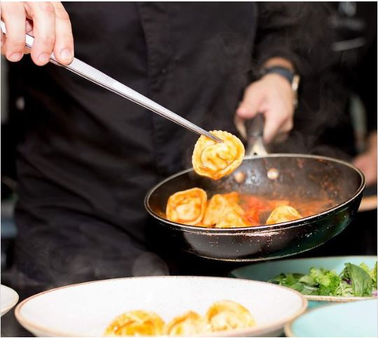
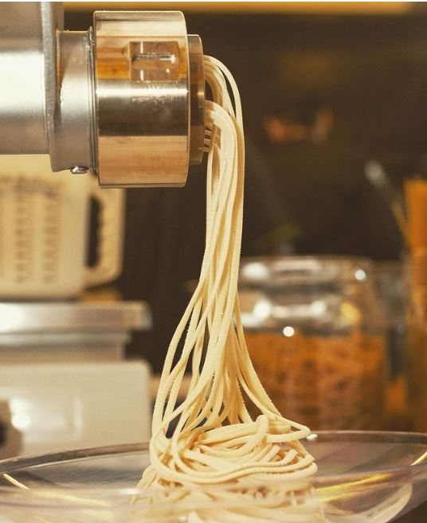
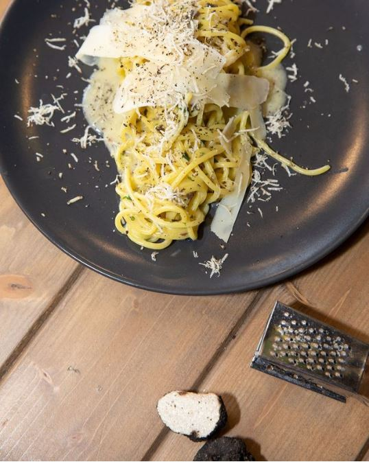
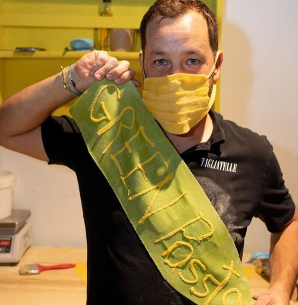

Începem o nouă serie de interviuri prin care ne propunem să stăm de vorbă cu câteva dintre restaurantele care, datorită platformei Tazz Republic, s-au extins, de curând, la nivel național. Creat pentru a susține antreprenorii din HoReCa în procesul de digitalizare și extindere națională, Tazz Republic aduce cele mai bune restaurante locale direct la ușa clienților săi din toată țara. Așadar, ne dorim să povestim cu fiecare ca să aflăm mai multe despre acest proiect, cum se desfășoară lucrurile, ce concluzii pot trage deja și ce planuri au.
Îți povesteam că prima oprire am făcut-o în Gheorgheni, unul dintre cartierele noastre favorite din Cluj. Apoi, am mers mai departe până în Grigorescu, care ne-a surprins plăcut. Ulterior, am ajuns în Zorilor, un cartier în care ne-am tot întoarce. Recent, ne-am plimbat prin Mănăștur, cel mai mare cartier al Clujului, care ne-a impresionat cu istoria lui bogată, picturile murale care-i dau culoare și varietatea de cofetării la care te poți îndulci. Acum am ajuns în Bună Ziua, cartierul al cărui nume plăcut ne face, aproape instant, să zâmbim. Situat în partea sudică a orașului, cartierul se dezvoltă pe zi ce trece din ce în ce mai mult, găzduind blocuri noi și ansambluri rezidențiale. Iată ce poți face în acest cartier.
Tazz Republic redefinește modul în care se fac business-urile în HoReCa prin susținerea apariției noului val de antreprenori digitali locali, orientați spre cele mai noi tendințe de pe piață. Astfel, Tazz a lansat mai multe branduri virtuale sub umbrela Tazz Republic – printre care și Dei Frati – care vor fi disponibile în mai multe orașe în care Tazz este prezent.
Dei Frati este, așa cum afli chiar din denumirea italiană, un restaurant deschis de doi frați, Vlad și Alex din Brașov, care aveau, la momentul respectiv, mai bine de zece ani petrecuți în bucătăriile din peninsulă. Cei doi s-au întors acasă în 2015 pentru a deschide o mică afacere de familie, un restaurant axat pe preparate cu paste în stil italian, afacere care a crescut peste așteptările lor. Când Alex împreună cu actuala lui soție au decis să se căsătorească, au considerat că e momentul oportun să revină în România și să-și deschidă un mic local. Ca sursă de motivație le-au servit tocmai părinții lor care au lucrat toată viața lor în Poiana Brașov, în HoReCa. Așa, cei doi frați și-au început parcursul în industria HoReCa împreună cu proprii părinți și soțiile lor.
Încet-încet, a prins contur și a debutat proiectul Dei Frati. Pe o stradă îngustă și colorată din Centrul Vechi al Brașovului, la doi pași de Piața Sfatului, care are adresa în piața George Enescu nr. 16, se află un local mic și intim, deja cunoscut iubitorilor de hrană simplă, naturală, temeinic făcută: Dei Frati. În atmosfera intimă, cu mese de lemn și bucătărie la vedere, te simți ca acasă printre decorurile rustice și mediteraneene – plante, piatră naturală, sticle cu forme vechi și cărți despre geometria pastelor proaspete. Inspirația restaurantului creat de ei își are rădăcina în interiorul restaurantului din Italia în care au lucrat și unde se serveau paste proaspete.
Poate ai auzit de crama Ca’ dei Frati, care are o vechime de mai bine de 150 de ani, din Lugana di Sirmione. Ei bine, restaurantul în interiorul căruia am lucrat noi avea la momentul respectiv o colaborare fructoasă cu această cramă cunoscută. Ca’, în dialect, este casă. Frati înseamnă frate din rândul călugărilor, pe când fratele prin rudenie este altceva, se scrie cu doi T: fratti. Noi am vrut să facem un restaurant ca o casă. O casă a fraților. Și cum nu puteam să luăm tot numele, am luat doar o parte: Dei Frati. – Vlad Napar, Co-Owner Dei Frati
Pe parcurs, au întâmpinat mai multe situații decât s-ar fi așteptat inițial – dar le-au făcut față cu brio. Consideră că dacă n-ar fi avut experiența lucrului într-un restaurant din Italia, le-ar fi fost mult mai greu să se adapteze și să gestioneze probleme care au apărut pe neașteptate. Nu după mult timp de la achiziționarea spațiului lor au realizat că un spațiu mic e mai complicat de administrat decât un spațiu mare. S-au văzut nevoiți să comaseze tot – de la frigidere, la zone de lucru și până la servire. Când au pornit la drum, nu s-au bucurat nici de un sprijin prea mare din partea celor din jurul lor. La momentul respectiv, în piața Enescu nu era nimic, iar toată lumea le spunea că n-o să le meargă.
Acum, în schimb, le merge mai mult decât bine. Restaurantul se deschide în fiecare zi la ora 12. Atât ei, cât și ceilalți angajați vin mult mai de dimineață, pentru a se apuca de aluatul de paste. De altfel, Vlad este de părere că ei au fost primii în Brașov cu conceptul de paste făcute cu adevărat în casă. Simte că nimeni nu le-a pus în valoare la fel de bine cum le-au pus ei.
Și mai important decât atât, în cazul multor produse am avut siguranța că vor prinde fiindcă în Italia erau deja extrem de apreciate. Iar noi am venit cu ideile și temele deja făcute. – Vlad
Așa a rezultat un meniu delicios pe care ne bucurăm că putem să-l degustăm astăzi și în Cluj, București și Timișoara prin intermediul platformei Tazz Republic. Lasagna și Tagliatele cu spanac, creveți și dovlecei (care – între noi fie vorba – sunt cele mai apreciate din meniul lor, la nivel național) și Paccheri tricolore sunt doar câteva dintre porțiile de paste din meniu care ne fac cu ochiul. De altfel, printre preparatele pe care suntem nerăbdători să le descoperim și în meniul Dei Frati din Cluj se numără Caserecce cu pesto, mozzarella și roșii uscate, Rigatoni 4 Formaggi și Tagliatelle Ragu. Mai ales acum că știm și cu câtă grijă își prepară rețetele, indiferent din orașul în care livrează.
De principiu, la un ou mediu ar trebui să folosești o sută de grame de făină, dar aluatul trebuie simțit la mână. Contează dimensiunile și calitatea oului, textura făinii, care uneori e mai densă sau mai fină. Contează chiar și anotimpul, umiditatea din aer, sau cât timp lași aluatul să se odihnească, dacă se usucă mai repede sau mai încet. – Vlad
De altfel, atunci când au fost selectați pentru a fi parte din proiectul care le permite să se extindă la nivel național prin digitalizare, criteriile pe care au trebuit să le îndeplinească au fost cât se poate de riguroase. Printre aspectele care au cântărit mult în acest sens se numără: calitatea cu care și-au obișnuit clienții, seriozitatea cu care Dei Frati își tratează atât clienții cât și colaboratorii, renumele pe care și l-au făcut în cei șapte ani de activitate și perseverența lor de a face lucrurile bine.
În cei șapte ani de activitate am mai avut oferte să deschidem și în alt orașe, însă părea destul de greu de realizat. Mlțumită acestui proiect am reușit. Procesul a fost o provocare care ne-a scos din zona noastră de confort, oferindu-ne noi provocări solicitante. Dar la sfârșitul zilei, suntem mulțumiți că putem bucura și gurile pofticioase din orașele care fac parte din proiect. – Vlad
Principala provocare pe care o întâmpină acum este aceea de a reuși să facă rețetele preparatelor din orașele colaboratoare să fie identice cu cele pregătite la restaurantul de origine, din Brașov.
La fel ca până acum, ne propunem să luăm lucrurile pas cu pas în acest proiect extrem de complex. De aceea, expansiunea o sa fie făcută fără grabă și bine, calitativ. Garantăm implicarea noastră 100% în acest proiect, iar colaboratorii pe care ni i-am ales au înțeles de la început că acesta este modul nostru de a face lucrurile. Așa, împreună, ne propunem să ne ridicăm la așteptările clienților. – Vlad
De la deschiderea virtuală a Dei Frati în Cluj, București și Timișoara până astăzi, Vlad și Alex au fost întrebați când ar urma deschiderea unui restaurant fizic în aceste locații.
Trebuie să fii tot timpul prezent. Trebuie să creşti, dar să fii atent să nu rămâi în urmă, fiindcă asta se întâmplă cu multe restaurante. Noi tot timpul am venit cu feluri noi – suntem unul dintre puţinele restaurante care schimbă des meniul, trebuie să fii în continuă mişcare, nu trebuie să rămâi cu acelaşi meniu dacă vrei să reuşeşti. – Vlad
La început a fost… nimeni și nimic care să ne vorbească despre viața orașului, despre ce se întâmplă în materie de evenimente și localuri pe plan local, niciun motiv care să ne scoată din casă.
Everyday we’re clujlife(ing). Ieșim din casă, vedem ce se întâmplă, ce mai e nou, ce mai zice lumea, ce-ar mai fi interesant de făcut, și apoi îți povestim și ție. Facem asta din Ianuarie 2008. Prezența aceasta îndelungată ne-a adus destule cunoștințe și curaj încât să abordăm subiecte pe care nu le ”atinge” nimeni. Avem informații pe care nu le găsești în altă parte și acces la mulți oameni din varii domenii.